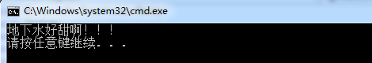
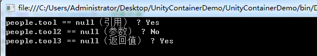
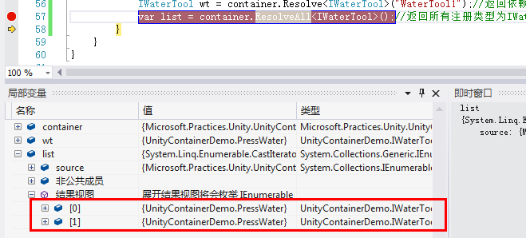
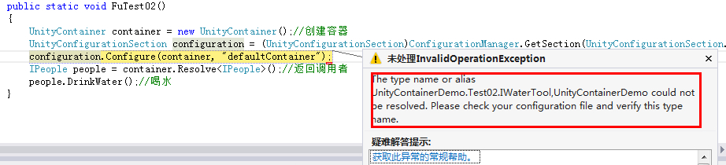
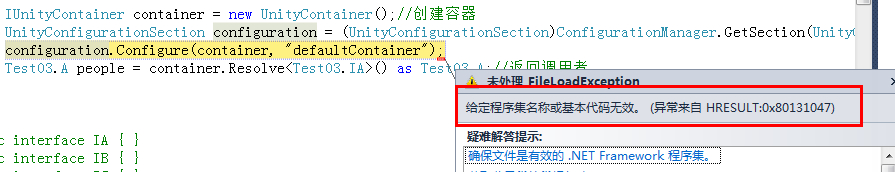
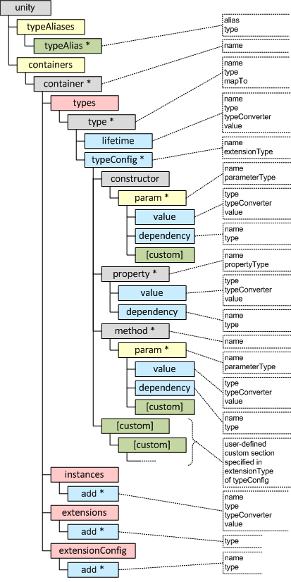
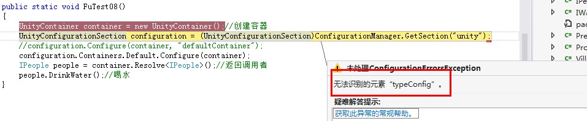
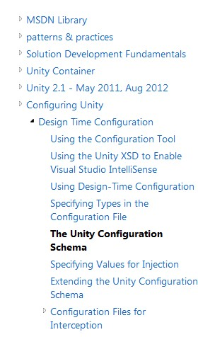
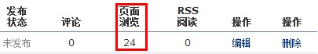

Unity依赖注入使用详解
写在前面
- 构造器注入
- Dependency属性注入
- InjectionMethod方法注入
- 非泛型注入
- 标识键
- ContainerControlledLifetimeManager单例
- Unity注册配置问题
- Unity的app.config节点配置
- 后记
关于控制反转（Inversion of Control）和依赖注入（Dependency Injection）大家网上可以找下相关概念，在《小菜学习设计模式（五）—控制反转（Ioc）》这篇文章中本人也有详细的解释，这边再说明下，有很多人把控制反转和依赖注入混为一谈，虽然在某种意义上来看他们是一体的，但好像又有些不同，就比如在上篇文章中所提到的示例。控制反转（Ioc）可以看成自来水厂，那自来水厂的运行就可以看作依赖注入（DI），Ioc是一个控制容器，DI就是这个容器的运行机制，有点像国家主席和总理的意思。
关于Ioc的框架有很多，比如astle Windsor、Unity、Spring.NET、StructureMap，我们这边使用微软提供的Unity做示例，你可以使用Nuget添加Unity，也可以引用Microsoft.Practices.Unity.dll和Microsoft.Practices.Unity.Configuration.dll，下面我们就一步一步的学习下Unity依赖注入的详细使用。
内容有点多，请坚持往下看哦！
构造器注入
构造器注入（Constructor Injection）：IoC容器会智能地选择选择和调用适合的构造函数以创建依赖的对象。如果被选择的构造函数具有相应的参数，IoC容器在调用构造函数之前解析注册的依赖关系并自行获得相应参数对象。
通过上面的定义看以看出，使用构造器注入需要在在构造函数中传递一个抽象参数，Ioc会自动解析具象所依赖的抽象并注册给具象，我们还是用上篇喝水作为示例：

1 /// <summary> 2 /// 人接口 3 /// </summary> 4 public interface IPeople 5 { 6 void DrinkWater(); 7 } 8 /// <summary> 9 /// 村民 10 /// </summary> 11 public class VillagePeople : IPeople 12 { 13 IWaterTool _pw; 14 public VillagePeople(IWaterTool pw) 15 { 16 _pw = pw; 17 } 18 public void DrinkWater() 19 { 20 Console.WriteLine(_pw.returnWater()); 21 } 22 } 23 /// <summary> 24 /// 压水井 25 /// </summary> 26 public class PressWater : IWaterTool 27 { 28 public string returnWater() 29 { 30 return "地下水好甜啊！！！"; 31 } 32 } 33 /// <summary> 34 /// 获取水方式接口 35 /// </summary> 36 public interface IWaterTool 37 { 38 string returnWater(); 39 }
代码很简单，PressWater依赖于IWaterTool，在VillagePeople构造函数中传递一个IWaterTool的抽象，我们看下调用代码：

1 static void Main(string[] args) 2 { 3 UnityContainer container = new UnityContainer();//创建容器 4 container.RegisterType<Test01.IWaterTool, Test01.PressWater>();//注册依赖对象 5 Test01.IPeople people = container.Resolve<Test01.VillagePeople>();//返回调用者 6 people.DrinkWater();//喝水 7 }
运行结果：

上面主要用到Unity的RegisterType和Resolve的泛型方法，我们看下RegisterType的方法签名：

1 // 2 // 摘要: 3 // Register a type mapping with the container. 4 // 5 // 参数: 6 // container: 7 // Container to configure. 8 // 9 // injectionMembers: 10 // Injection configuration objects. 11 // 12 // 类型参数: 13 // TFrom: 14 // System.Type that will be requested. 15 // 16 // TTo: 17 // System.Type that will actually be returned. 18 // 19 // 返回结果: 20 // The Microsoft.Practices.Unity.UnityContainer object that this method was 21 // called on (this in C#, Me in Visual Basic). 22 // 23 // 备注: 24 // This method is used to tell the container that when asked for type TFrom, 25 // actually return an instance of type TTo. This is very useful for getting 26 // instances of interfaces. 27 // This overload registers a default mapping and transient lifetime. 28 public static IUnityContainer RegisterType<TFrom, TTo>(this IUnityContainer container, params InjectionMember[] injectionMembers) where TTo : TFrom;
我们可以看到RegisterType的第一个参数是this IUnityContainer container，我们上面调用的时候并没有传递一个IUnityContainer 类型的参数，为什么这里会有一个this关键字，做什么用？其实这就是扩展方法。这个扩展方法在静态类中声明，定义一个静态方法（UnityContainerExtensions类和RegisterType都是静态的），其中第一个参数定义可它的扩展类型。RegisterType方法扩展了UnityContainerExtensions类，因为它的第一个参数定义了IUnityContainer（UnityContainerExtensions的抽象接口）类型，为了区分扩展方法和一般的静态方法，扩展方法还需要给第一个参数使用this关键字。
还有就是RegisterType的泛型约束 where TTo : TFrom; TTo必须是TFrom的派生类，就是说TTo依赖于TFrom。
我们再来看下Resolve泛型方法的签名：
1 // 2 // 摘要: 3 // Resolve an instance of the default requested type from the container. 4 // 5 // 参数: 6 // container: 7 // Container to resolve from. 8 // 9 // overrides: 10 // Any overrides for the resolve call. 11 // 12 // 类型参数: 13 // T: 14 // System.Type of object to get from the container. 15 // 16 // 返回结果: 17 // The retrieved object. 18 public static T Resolve<T>(this IUnityContainer container, params ResolverOverride[] overrides);
“Resolve an instance of the default requested type from the container”，这句话可以翻译为：解决从容器的默认请求的类型的实例，就是获取调用者的对象。
关于RegisterType和Resolve我们可以用自来水厂的例子来说明，请看下面：
- RegisterType：可以看做是自来水厂决定用什么作为水源，可以是水库或是地下水，我只要“注册”开关一下就行了。
- Resolve：可以看做是自来水厂要输送水的对象，可以是农村或是城市，我只要“控制”输出就行了。
Dependency属性注入
属性注入（Property Injection）：如果需要使用到被依赖对象的某个属性，在被依赖对象被创建之后，IoC容器会自动初始化该属性。
属性注入只需要在属性字段前面加[Dependency]标记就行了，如下：
1 /// <summary> 2 /// 村民 3 /// </summary> 4 public class VillagePeople : IPeople 5 { 6 [Dependency] 7 public IWaterTool _pw { get; set; } 8 public void DrinkWater() 9 { 10 Console.WriteLine(_pw.returnWater()); 11 } 12 }
调用方式和构造器注入一样，通过RegisterType<Test02.IWaterTool, Test02.PressWater>();注入就可以了，除了使用RegisterType方法注册，我们还可以在配置文件中注册，[Dependency]和RegisterType方式其实都会产生耦合度，我们要添加一个属性或是修改一中注册都会去修改代码，我们要做的就是代码不去修改，只要修改配置文件了，这个在下面有讲解，这边就不多说，我们先看下使用UnityConfigurationSection的Configure方法加载配置文件注册：
1 <unity> 2 <containers> 3 <container name="defaultContainer"> 4 <register type="UnityContainerDemo.IWaterTool,UnityContainerDemo" mapTo="UnityContainerDemo.PressWater,UnityContainerDemo"/> 5 <register type="UnityContainerDemo.IPeople,UnityContainerDemo" mapTo="UnityContainerDemo.VillagePeople02,UnityContainerDemo"/> 6 </container> 7 </containers> 8 </unity>
调用代码：
1 public static void FuTest02() 2 { 3 UnityContainer container = new UnityContainer();//创建容器 4 UnityConfigurationSection configuration = (UnityConfigurationSection)ConfigurationManager.GetSection(UnityConfigurationSection.SectionName); 5 configuration.Configure(container, "defaultContainer"); 6 IPeople people = container.Resolve<IPeople>();//返回调用者 7 people.DrinkWater();//喝水 8 }
运行结果：

InjectionMethod方法注入
方法注入（Method Injection）：如果被依赖对象需要调用某个方法进行相应的初始化，在该对象创建之后，IoC容器会自动调用该方法。
方法注入和属性方式使用一样，方法注入只需要在方法前加[InjectionMethod]标记就行了，从方法注入的定义上看，只是模糊的说对某个方法注入，并没有说明这个方法所依赖的对象注入，所依赖的对象无非就三种：参数、返回值和方法内部对象引用，我们做一个示例试下：
1 /// <summary> 2 /// 村民 3 /// </summary> 4 public class VillagePeople03 : IPeople 5 { 6 public IWaterTool tool;//我是对象引用 7 public IWaterTool tool2;//我是参数 8 public IWaterTool tool3;//我是返回值 9 [InjectionMethod] 10 public void DrinkWater() 11 { 12 if (tool == null) 13 { } 14 } 15 [InjectionMethod] 16 public void DrinkWater2(IWaterTool tool2) 17 { 18 this.tool2 = tool2; 19 } 20 [InjectionMethod] 21 public IWaterTool DrinkWater3() 22 { 23 return tool3; 24 } 25 }
调用代码：
1 public static void FuTest03() 2 { 3 UnityContainer container = new UnityContainer();//创建容器 4 UnityConfigurationSection configuration = (UnityConfigurationSection)ConfigurationManager.GetSection(UnityConfigurationSection.SectionName); 5 configuration.Configure(container, "defaultContainer"); 6 VillagePeople03 people = container.Resolve<IPeople>() as VillagePeople03;//返回调用者 7 Console.WriteLine("people.tool == null（引用） ? {0}", people.tool == null ? "Yes" : "No"); 8 Console.WriteLine("people.tool2 == null（参数） ? {0}", people.tool2 == null ? "Yes" : "No"); 9 Console.WriteLine("people.tool3 == null（返回值） ? {0}", people.tool3 == null ? "Yes" : "No"); 10 }
container.Resolve<IPeople>() as VillagePeople03;其实多此一举，因为已经在配置文件注册过了，不需要再进行转化，这边只是转化只是方便访问VillagePeople03对象的几个属性值，我们看下运行效果：

结果不言而喻，其实我们理解的方法注入就是对参数对象的注入，从typeConfig节点-method节点-param节点就可以看出来只有参数的配置，而并没有其他的配置，关于typeConfig下面会讲到。
非泛型注入
除了我们上面使用RegisterType和Resolve泛型方法，我们也可以使用非泛型注入，代码如下：
1 public static void FuTest04() 2 { 3 UnityContainer container = new UnityContainer();//创建容器 4 container.RegisterType(typeof(IWaterTool), typeof(PressWater));//注册依赖对象 5 IPeople people = (IPeople)container.Resolve(typeof(VillagePeople01));//返回调用者 6 people.DrinkWater();//喝水 7 }
运行效果：
标识键
我们知道，Unity提供了对象的容器，那么这个容器是如何进行索引的呢？也就是说，容器内的单元是如何标识的呢？在Unity中，标识主要有两种方式， 一种是直接使用接口（或者基类）作为标识键，另一种是使用接口（或者基类）与名称的组合作为标识键，键对应的值就是具体类。
第一种使用接口（或者基类）作为标识键：
1 container.RegisterType<IWaterTool, PressWater>();
代码中的IWaterTool就是作为标识键，你可以可以使用基类或是抽象类作为标示，获取注册对象：container.Resolve<IWaterTool>()，如果一个Ioc容器容器里面注册了多个接口或是基类标示，我们再这样获取就不知道注册的是哪一个？怎么解决，就是用接口或是基类与名称作为标识键，示例代码如下：
1 public static void FuTest05() 2 { 3 UnityContainer container = new UnityContainer();//创建容器 4 container.RegisterType<IWaterTool, PressWater>("WaterTool1");//注册依赖对象WaterTool1 5 container.RegisterType<IWaterTool, PressWater>("WaterTool2");//注册依赖对象WaterTool2 6 IWaterTool wt = container.Resolve<IWaterTool>("WaterTool1");//返回依赖对象WaterTool1 7 var list = container.ResolveAll<IWaterTool>();//返回所有注册类型为IWaterTool的对象 8 }
我们只需要在泛型方法RegisterType传入一个名称就可以来区分了（和注册接口或基类），获取的话也只要传入注册时候的名称即可，我们看下list中的集合对象：

ContainerControlledLifetimeManager单例
关于单例概念可以参考《小菜学习设计模式（二）—单例（Singleton）模式》这篇文章，为了实现单例模式，我们通常的做法是，在类中定义一个方法如GetInstance，判断如果实例为null则新建一个实例，否则就返回已有实例。但是我觉得这种做法将对象的生命周期管理与类本身耦合在了一起。所以我觉得遇到需要使用单例的地方，应该将生命周期管理的职责转移到对象容器Ioc上，而我们的类依然是一个干净的类，使用Unity创建单例代码：
1 public static void FuTest07() 2 { 3 UnityContainer container = new UnityContainer();//创建容器 4 container.RegisterType<IWaterTool, PressWater>(new ContainerControlledLifetimeManager());//注册依赖对象 5 IPeople people = container.Resolve<VillagePeople01>();//返回调用者 6 people.DrinkWater();//喝水 7 }
上面演示了将IWaterTool注册为PressWater，并声明为单例，ContainerControlledLifetimeManager字面意思上就是Ioc容器管理声明周期，我们也可以不使用类型映射，将某个类注册为单例：
1 container.RegisterType<PressWater>(new ContainerControlledLifetimeManager());
除了将类型注册为单例，我们也可以将已有对象注册为单例，使用RegisterInstance方法，示例代码：
1 PressWater pw = new PressWater(); 2 container.RegisterInstance<IWaterTool>(pw);
上面的代码就表示将PressWater的pw对象注册到Ioc容器中，并声明为单例。
如果我们在注册类型的时候没有指定ContainerControlledLifetimeManager对象，Resolve获取的对象的生命周期是短暂的，Ioc容器并不会保存获取对象的引用，就是说我们再次Resolve获取对象的时候，获取的是一个全新的对象，如果我们指定ContainerControlledLifetimeManager，类型注册后，我们再次Resolve获取的对象就是上次创建的对象，而不是再重新创建对象，这也就是单例的意思。
Unity注册配置问题
一开始我做的这示例是类类注册，就是说类包含类，所有的接口和对象都是放在TestXX类文件中，在配置register注册节点的时候，总是报下面错误：

或者

Unity配置文件：
1 <unity> 2 <containers> 3 <container name="defaultContainer"> 4 <register type="UnityContainerDemo.Test02.IWaterTool,UnityContainerDemo" mapTo="UnityContainerDemo.Test02.PressWater,UnityContainerDemo"/> 5 <register type="UnityContainerDemo.Test02.IPeople,UnityContainerDemo" mapTo="UnityContainerDemo.Test02.VillagePeople,UnityContainerDemo"/> 6 </container> 7 </containers> 8 </unity>
第一个错误是“UnityContainerDemo.Test02.IWaterTool,UnityContainerDemo”未被识别，第二个错误是“UnityContainerDemo”程序集无效，这种是使用UnityConfigurationSection方式注册的，使用RegisterType方法注册就没什么问题，不知道是我节点配置有问题，还是代码写的有问题，如果有知道的朋友，还请赐教，为了这个问题，调试了好久，最终没办法把代码都单独放开。
Unity的app.config节点配置
上面所说的三种注入方式，包括单例创建都是在代码中去配置的，当然只是演示用，这种配置都会产生耦合度，比如添加一个属性注入或是方法注入都要去属性或是方法前加[Dependency]和[InjectionMethod]标记，我们想要的依赖注入应该是去配置文件中配置，当系统发生变化，我们不应去修改代码，而是在配置文件中修改，这才是真正使用依赖注入解决耦合度所达到的效果，先看下Unity完整的配置节点：

上面的图大家可能都见过，我再贴一下Unity示例节点配置，原文地址：msdn.microsoft.com/en-us/library/ff647848.aspx，稍微翻译了下。
1 <?xml version="1.0"?> 2 <configuration> 3 <configSections> 4 <section name="unity" type="Microsoft.Practices.Unity.Configuration.UnityConfigurationSection, 5 Microsoft.Practices.Unity.Configuration" /> 6 </configSections> 7 <typeAliases> 8 <!--寿命管理器类型--> 9 <typeAlias alias="singleton" type="Microsoft.Practices.Unity.ContainerControlledLifetimeManager,Microsoft.Practices.Unity" /> 10 <typeAlias alias="external" type="Microsoft.Practices.Unity.ExternallyControlledLifetimeManager, Microsoft.Practices.Unity" /> 11 <!--用户定义的类型别名--> 12 <typeAlias alias="IMyInterface" type="MyApplication.MyTypes.MyInterface, MyApplication.MyTypes" /> 13 <typeAlias alias="MyRealObject" type="MyApplication.MyTypes.MyRealObject, MyApplication.MyTypes" /> 14 <typeAlias alias="IMyService" type="MyApplication.MyTypes.MyService, MyApplication.MyTypes" /> 15 <typeAlias alias="MyDataService" type="MyApplication.MyTypes.MyDataService, MyApplication.MyTypes" /> 16 <typeAlias alias="MyCustomLifetime" type="MyApplication.MyLifetimeManager, MyApplication.MyTypes" /> 17 </typeAliases> 18 <unity> 19 <containers> 20 <container name="containerOne"> 21 <types> 22 <!--类型映射无一生-默认为“瞬时”--> 23 <type type="Custom.MyBaseClass" mapTo="Custom.MyConcreteClass" /> 24 <!--使用上面定义的别名类型的映射--> 25 <type type="IMyInterface" mapTo="MyRealObject" name="MyMapping" /> 26 <!--使用类型别名指定的终身--> 27 <type type="Custom.MyBaseClass" mapTo="Custom.MyConcreteClass"> 28 <lifetime type="singleton" /> 29 </type> 30 <type type="IMyInterface" mapTo="MyRealObject" name="RealObject"> 31 <lifetime type="external" /> 32 </type> 33 <!--使用完整的类型名指定终身经理--> 34 <!--的一生经理指定的任何初始化数据--> 35 <!--将要使用的默认类型转换器转换--> 36 <type type="Custom.MyBaseClass" mapTo="Custom.MyConcreteClass"> 37 <lifetime value="sessionKey" type="MyApplication.MyTypes.MyLifetimeManager,MyApplication.MyTypes" /> 38 </type> 39 <!--使用一个自定义TypeConverter的终身管理器初始化--> 40 <type type="IMyInterface" mapTo="MyRealObject" name="CustomSession"> 41 <lifetime type="MyCustomLifetime" value="ReverseKey" typeConverter="MyApplication.MyTypes.MyTypeConverter,MyApplication.MyTypes" /> 42 </type> 43 <!--对象在配置中定义的注入参数--> 44 <!--使用上面定义的别名类型的映射--> 45 <type type="IMyService" mapTo="MyDataService" name="DataService"> 46 <typeConfig extensionType="Microsoft.Practices.Unity.Configuration.TypeInjectionElement, Microsoft.Practices.Unity.Configuration"> 47 <constructor> 48 <param name="connectionString" parameterType="string"> 49 <value value="AdventureWorks"/> 50 </param> 51 <param name="logger" parameterType="ILogger"> 52 <dependency /> 53 </param> 54 </constructor> 55 <property name="Logger" propertyType="ILogger" /> 56 <method name="Initialize"> 57 <param name="connectionString" parameterType="string"> 58 <value value="contoso"/> 59 </param> 60 <param name="dataService" parameterType="IMyService"> 61 <dependency /> 62 </param> 63 </method> 64 </typeConfig> 65 </type> 66 </types> 67 68 <instances> 69 <add name="MyInstance1" type="System.String" value="Some value" /> 70 <add name="MyInstance2" type="System.DateTime" value="2008-02-05T17:50:00" /> 71 </instances> 72 73 <extensions> 74 <add type="MyApp.MyExtensions.SpecialOne" /> 75 </extensions> 76 77 <extensionConfig> 78 <add name="MyExtensionConfigHandler" type="MyApp.MyExtensions.SpecialOne.ConfigHandler" /> 79 </extensionConfig> 80 </container> 81 </containers> 82 </unity> 83 <startup> 84 <supportedRuntime version="v4.0" sku=".NETFramework,Version=v4.5"/> 85 </startup> 86 </configuration>
配置过unity的朋友看一下可能就清楚，这边我们再简单说下：
- Unity的配置节的名称为”Unity"，节处理程序的类型为 Microsoft.Practices.Unity.Configuration.UnityConfigurationSection，它包含在程序集Microsoft.Practices.Unity.Configuration 中，当前程序添加该程序集的引用。
- typeAliases管理生命周期类型，以及一些类型别名的设置，方便我们映射对象的编写，比如同一个类型注册多次，我们只要在typeAlias添加一个类型别名，这样我们再添加这个类型映射的时候只要写个别名就可以了。
- containers是容器container集合，我们可以配置多个容器类型，通过Name属性就可以访问，比如访问defaultContainer容器代码：configuration.Configure(container, "defaultContainer");
- container为容器管理，下面包含多个类型映射，我们平常使用的构造器注册、属性注册和方法注册，就可以在constructor、property、method节点进行配置。
根据上面的配置，我做了一个简单的方法注入示例，配置注册信息都是在文件中，并不是使用RegisterType方法进行注册，但是报下面错误：

无法识别的元素“typeConfig”。示例是完全按照unity配置说明进行配置的，Google或是百度都找不到问题所在，也试了很多种方式，最后Google英文“Unrecognized element 'typeConfig'”，终于找到问题：http://unity.codeplex.com/discussions/209002，英文我大概看得不是很懂，好像是unity版本问题，unity2.0配置文件中并没有typeConfig节点，而我们使用的unity程序集是最新的，而并没有识别typeConfig节点，这个问题很严重，也花了我两天时间，就像那位提问者最后所说：“I can not tell you how grateful I am, I've spent the last 2 days trying to figure this one out.”，虽然问题原因找到了，但是是通过英文搜索找到了，就是说国外遇到过类似问题，难道我们国内没有遇到过，郁闷。
大家可能有些纳闷，为什么你上面几个示例使用的unity配置没有报错，我当时在写示例的时候只是使用简单的类型映射，并不是使用完整的unity配置文件，然后就网上找了下，就找到了msdn.microsoft.com/en-us/library/ff647848.aspx，当时没有注意版本问题，所以就出现了上面的问题，我们上面示例unity配置文件中Register节点就是unity2.0的配置，这也是为什么上面示例可以运行的原因。
unity2.0的配置文件配置说明找了好久，终于在MSDN找到了：http://msdn.microsoft.com/en-us/library/ff660914%28v%3Dpandp.20%29.aspx#config_constructor，没有中文版本，英文不好的朋友可以使用Google简单翻译下，注意这段话“Unity 2.0 uses a new streamlined configuration schema for configuring Unity.”，这才是我们要使用的unity2.0的配置文件，其实和1.2版本差不多，只不过是简化了一些东西，配置起来也更加方便，这边就不多说了，列一下配置目录：
- The <unity> Configuration Section
- The <container> Element
- The <register> Element
- The <lifetime> Element
- The <constructor> Element
- The <property> Element
- The <method> Element
- The <param> Element
- The <dependency> Element
- The <value> Element
- The <optional> Element
- The <array> Element
- The <extension> Element
- The <instance> Element
- The <namespace > Element
- The <alias> Element
- The <sectionExtension> Element
在unity1.2中我们使用构造器注入、属性注入和方法注入会有parameterType节点，就是说在constructor、property和method这些节点可以配置这些方式注入所依赖的类型，但是在unity2.0并不存在parameterType节点了，所有类型注册都是通过register节点进行配置的，相当于unity1.2中的type节点，虽然unity2.0存在constructor、property和method节点，但我感觉只是针对构造器、属性和方法本身进行注入。
另外在unity2.0配置中alias节点下的生命管理周期配置并不需要了，比如我们创建一个单例注册类型，只需要配置下面就可以了：
1 <containers> 2 <container name="defaultContainer"> 3 <register type="UnityContainerDemo.IPeople, UnityContainerDemo" mapTo="UnityContainerDemo.VillagePeople01, UnityContainerDemo"> 4 <lifetime type="singleton" /> 5 </register> 6 <register type="UnityContainerDemo.IWaterTool, UnityContainerDemo" mapTo="UnityContainerDemo.PressWater, UnityContainerDemo"/> 7 </container> 8 </containers> 9 </unity>
并不需要再像unity1.2中创建下面节点：
1 <typeAlias alias="singleton" type="Microsoft.Practices.Unity.ContainerControlledLifetimeManager,Microsoft.Practices.Unity" />
后记
本篇中的代码稍微整理了下，有兴趣的朋友可以下载看看，地址：http://pan.baidu.com/s/1pJAtdoR
关于Unity依赖注入其实还有很多的东西，看一下MSDN目录就知道了：

但都没有中文版本，本文只是抛砖引玉，也希望园友们可以多写一些关于Unity依赖注入的东西，也是扩充Unity的中文资料。
另外插一句，我在写博客的时候喜欢在草稿箱浏览很多次，不管是内容上或是排版字体上，写一段，浏览一段，修改一段，有点小强迫症哈，但是是对自己负责，也是对别人负责。

如果你觉得本篇文章对你有所帮助，请点击右下部“推荐”，^_^